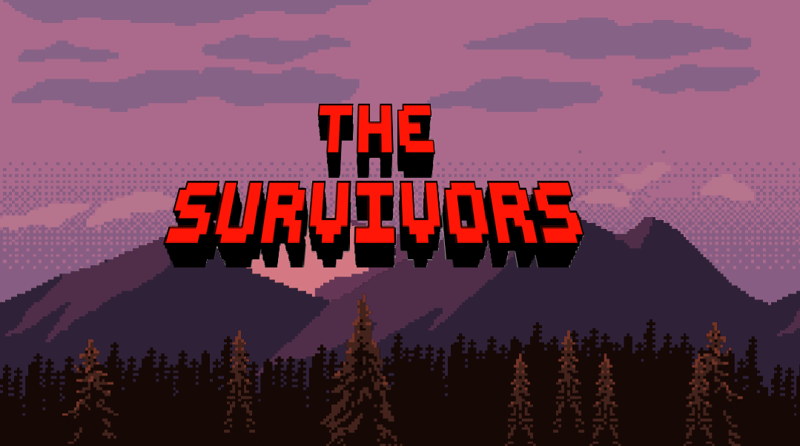
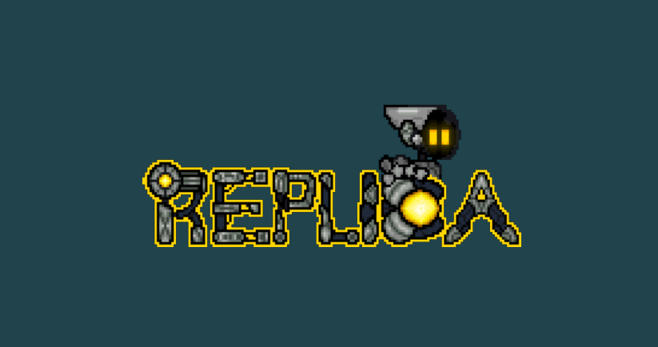
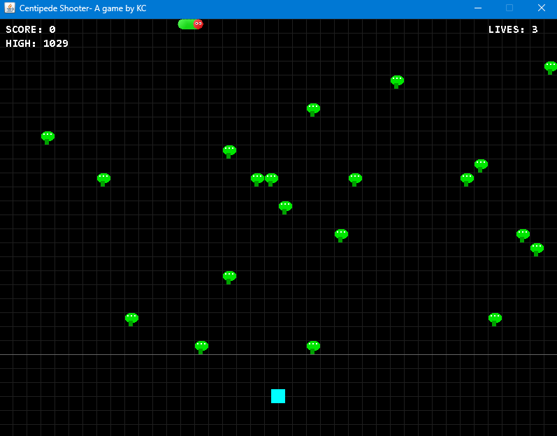

The Long Second
A time-manipulation platformer made solo in 4 days for the 2026 GMTK Game Jam. The theme of the jam was Countdown.
A time-manipulation platformer made solo in 4 days for the 2026 GMTK Game Jam. The theme of the jam was Countdown.

A story-driven 2D metroidvania currently in development.

A puzzle-platformer game made in 4 days for the 2025 GMTK Game jam. The theme of the jam was Loop.

A recreation of the classic Centipede arcade game, built entirely in Java with Swing.